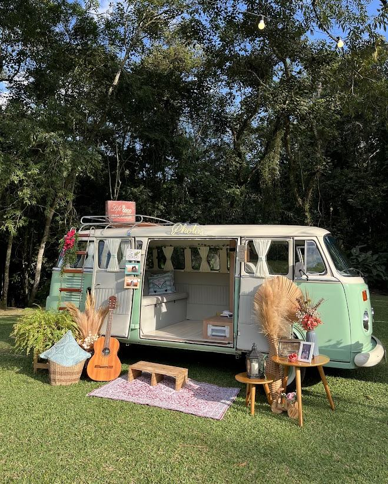

Kombi Retrô
O charme sobre quatro rodas. A Kombi entra na festa como cenário e sai como a lembrança preferida de todo mundo.
- Câmera fotográfica montada no interior
- Tirinhas e polaroids impressas na hora
- Acessórios e props temáticos
- Já é decoração: rende foto até de quem não entra
Ideal para casamentos, bodas e festas ao ar livre
Quero a Kombi no meu evento